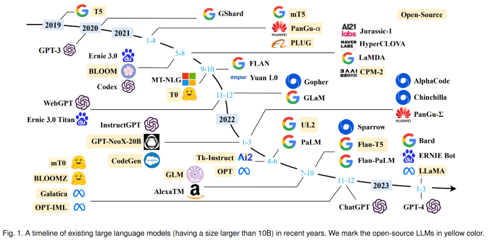

课程还在建设中，具体内容可能会有改动
请关注课程主页
每节课都会上传对应的讲座录屏与课程讲义
每节课都会有对应的课后实验
四个课程大作业
| 基本原理 | 做事方案 | 正确性风险 | 代表例子 |
|---|---|---|---|
| 高中物理实验 | |||
| 程序设计作业 | |||
| 数学/算法题 | |||
| 练手项目 | |||
| 业界和科研的真实问题 |
学会独立思考
学会提问=学会不提问
我们是公益性质的活动，请对助教好一些 :)
躺平容易坚持难, 但如果你能坚持下来, 你就可以得到脱胎换骨的提升

计算机是需要“终生学习”的领域
没有人可以完全记住所有的计算机知识
知识的学习固然重要，但解决问题的能力才是更为本质的内容
我们不希望你成为“学究”
“在宿舍对室友写出的scanf("%d", a)，指指点点”并没有多少意义
事实上人类并不擅长找错误
但是工具擅长：gcc -Wall -Werror
事实上对于找错误，人类已经不如LLM了
综合利用工具和AI，才是人类的强项
“独立“完成Proj1，理论上顺手绩点5.0已经不是问题了
吾侪小人，朝不及夕，相时射利，皇恤厥德？庶几侥幸，不种而获。